Tuwa · v4.1 polish round
FABRIC · COMPOSITION · CHROME
Three parallel sessions (your dispatch), verified and landed 2026-07-20. Combined gate: 784 tests — 782 passed / 0 failed / 2 skipped. Everything below is a real sim capture from the landed tree.
The three commits
| 03331d3 | WS1 — Interaction fabric + Console tab bar. Five-Primitive Law (Key/Row/Detent/Needle/Surface) in DESIGN.md v4.1 with your adjustments: reduced haptics, ~100ms digit rolls, fixed-width value cells, needles never travel via zero. Console bar: 11pt title-case, sliding well, springy red tick (the one sanctioned overshoot — fenced). |
| 0a960ce | WS2 — Layout recomposition. Baseline-aligned readouts on both panels, MetricCell grids with unit superscripts, ruled section headers on all five tabs, Recovery's designed peak (micro tick scale, no panel — law intact). |
| 8d6da07 | WS3 — Sheet chrome + controls + charts. InstrumentSheetHeader on 12 sheets (stock glass chrome dead), detent pass on 6 controls (haptics only at limits and true detents), chart palette moved to cool instrument traces. |
Before / after — the screens

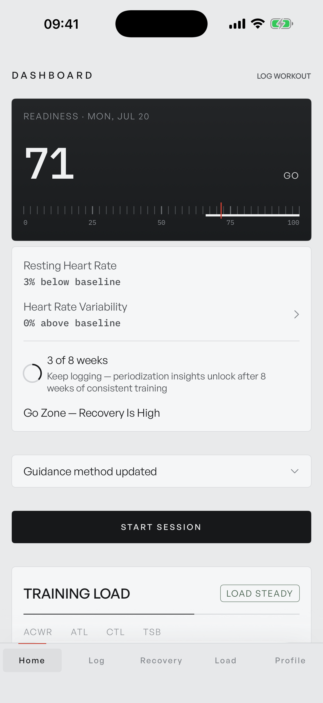
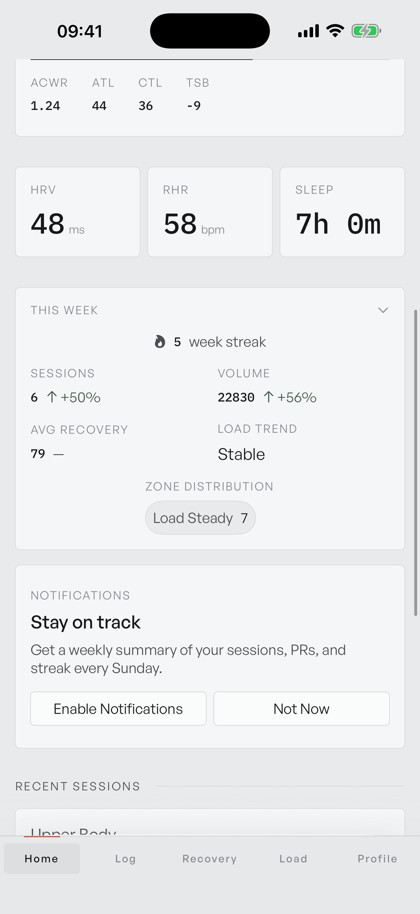
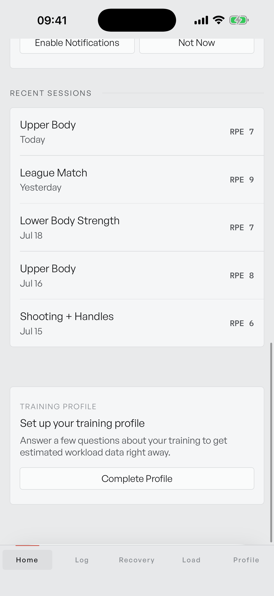

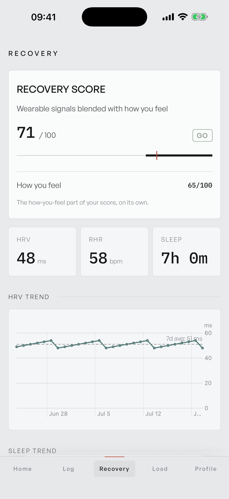

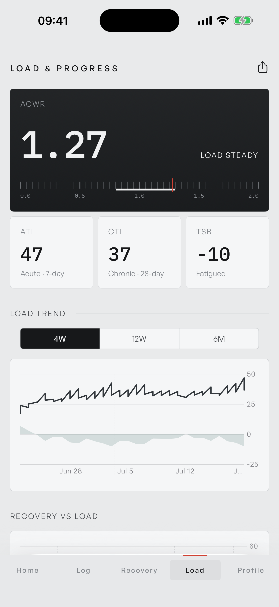
The sheet chrome kill (WS3's headline)
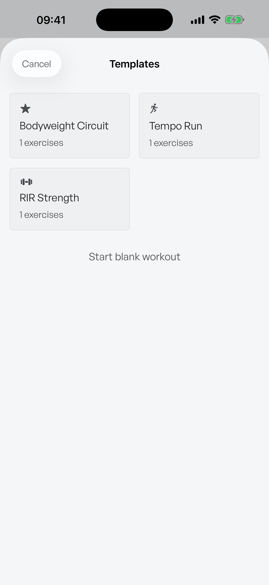
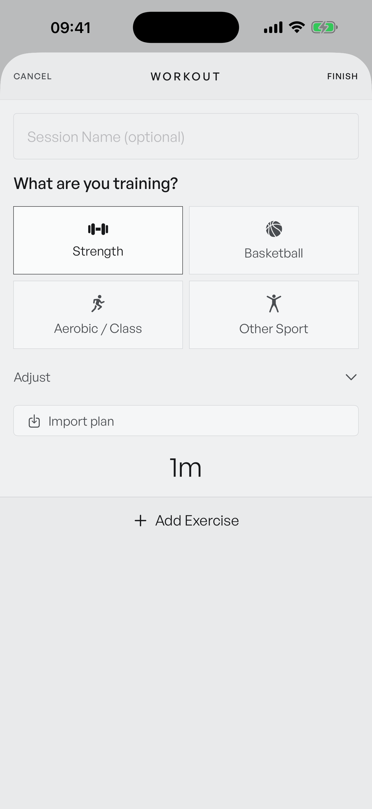
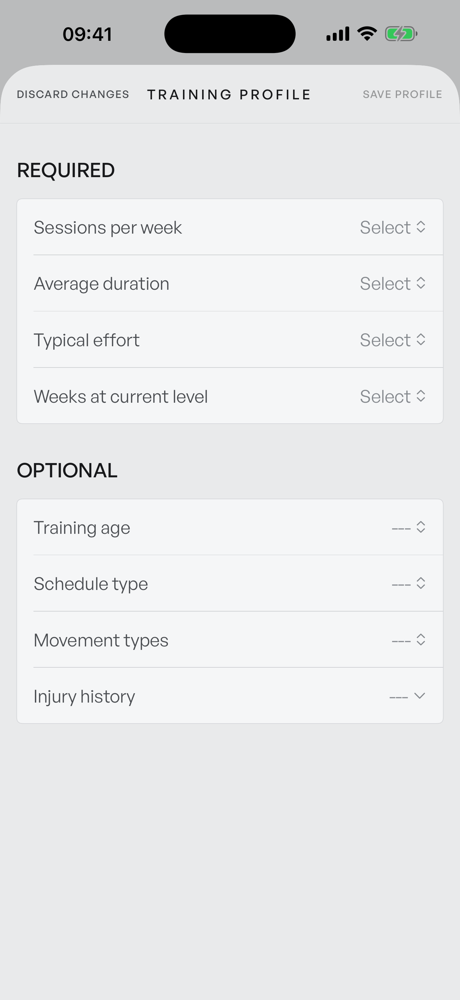
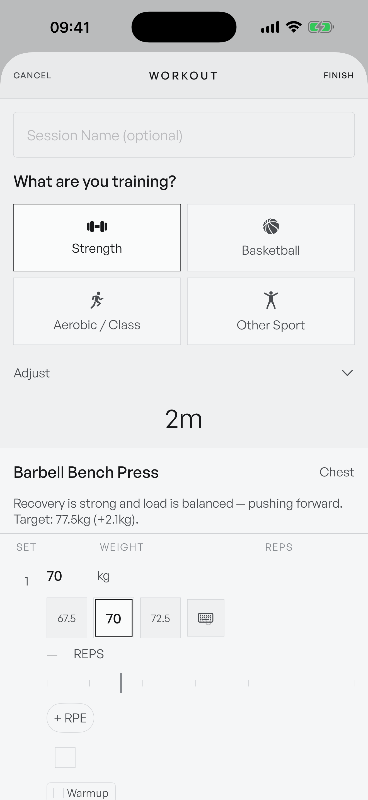
Tab bar & fabric close-ups
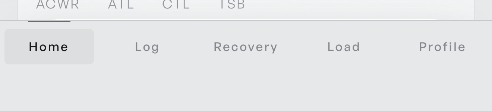
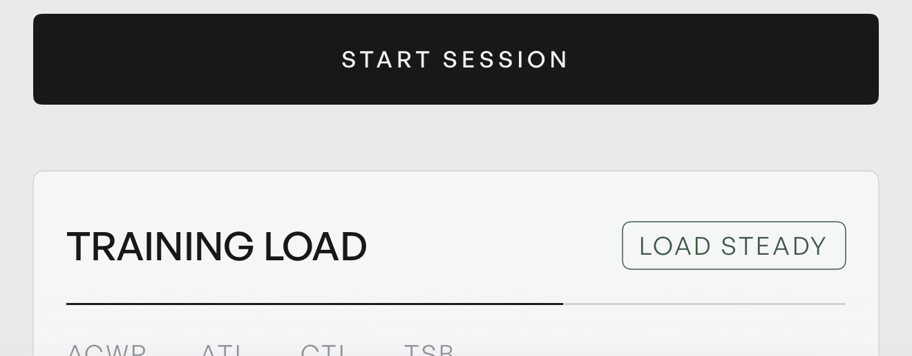

Motion (watch, don't read)
What only your phone can judge
| 1 | Detent clicks — the Home count-up should tick once as the needle crosses into the zone band (the app's only scale haptics; simulator can't render them). |
| 2 | Press feel — key brighten + row wells under a real finger; steppers should feel silent-but-solid, clicking only at floors/ceilings. |
| 3 | Console bar at arm's length — the readability complaint this round set out to fix. |
| 4 | Digit rolls — value changes should read as a tick, not an animation (~100ms), and never reflow their container width. |
Open threads (logged in the handoff doc): optional 11pt-Regular tab token · TemplateCarousel/NextMatch 19pt headers · ShareImportPreviewSheet title key · broader RowWell/DialValueCell adoption. Report lives at .planning/orchestration/2026-07-20-v41-report.html · commits 03331d3 / 0a960ce / 8d6da07 / ca25b8e, unpushed on main.